Professor Associado · IRIT/Université Toulouse Capitole, França
Formação · Experiência · Motivação
| Tipo | Referência | Veículo | Qualis/Impacto | Ano |
|---|---|---|---|---|
| Periódico | Berghegger et al. - Analyzing Interpretable Visual Control Policy Search and Synthesis | ACM TELO | A2 | 2026 |
| Periódico | Lavinas et al. - Multiobjective Evolutionary Component Effect on Algorithm Behavior | ACM TELO | A2 | 2024 |
| Periódico | Lavinas et al. - Faster Convergence in Multiobjective Optimization Algorithms Based on Decomposition | Evolutionary Computation | A2 | 2022 |
| Conferência | Lavinas et al. - Component-wise Analysis of Automatically Designed Multiobjective Algorithms on Constrained Problems | GECCO | A1 | 2022 |
Mais de 15 colaboradores no mundo todo: Brasil, França, Japão, Reino Unido, Estados Unidos, Itália
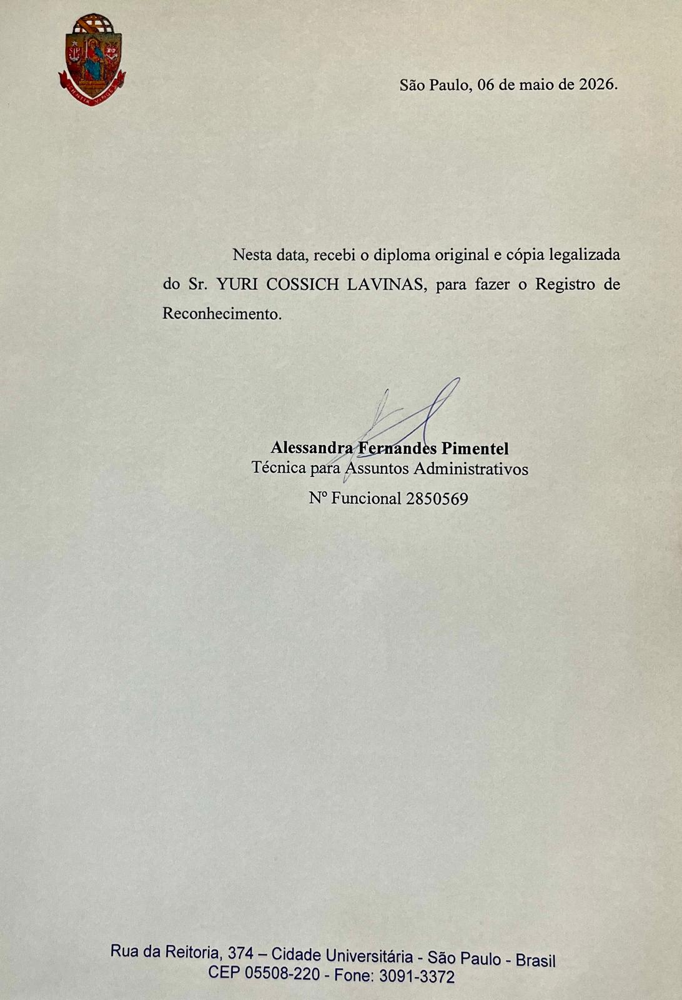
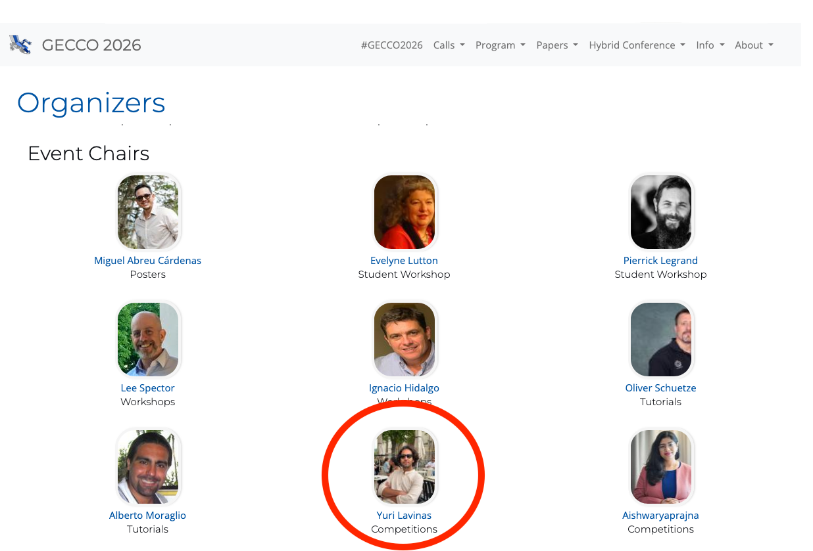
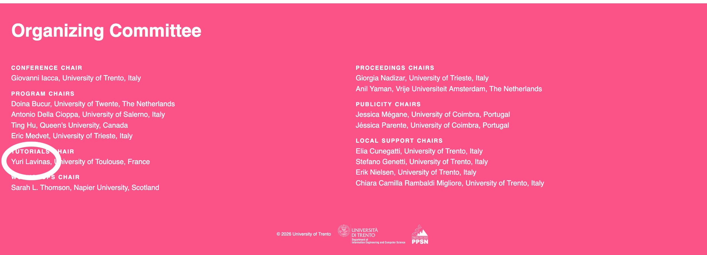
Diferentes problemas complexos
Modelos compreensíveis por especialistas
Saúde · controle · modelagem ambiental
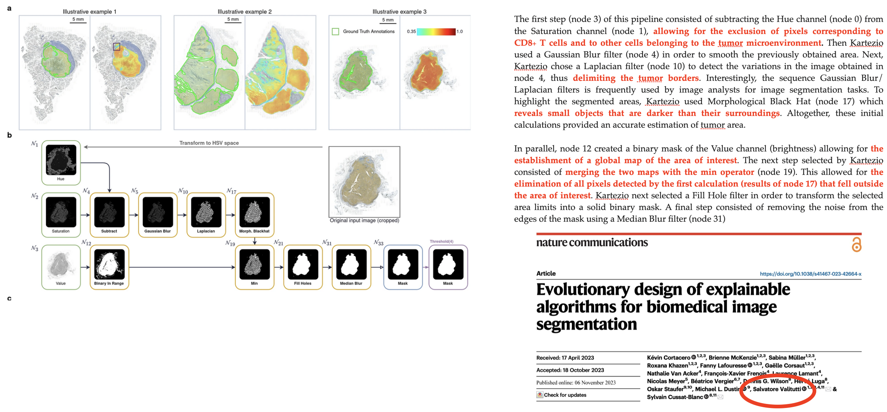
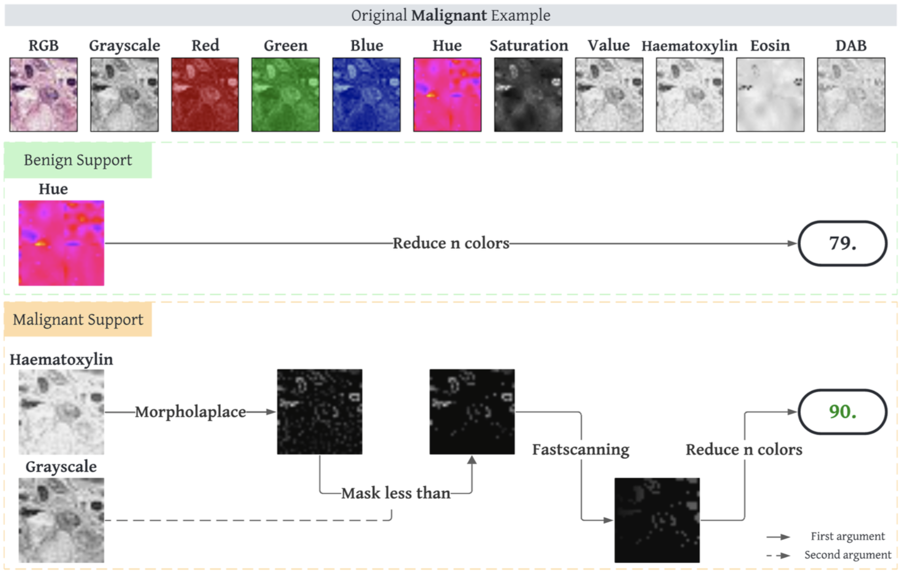
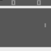
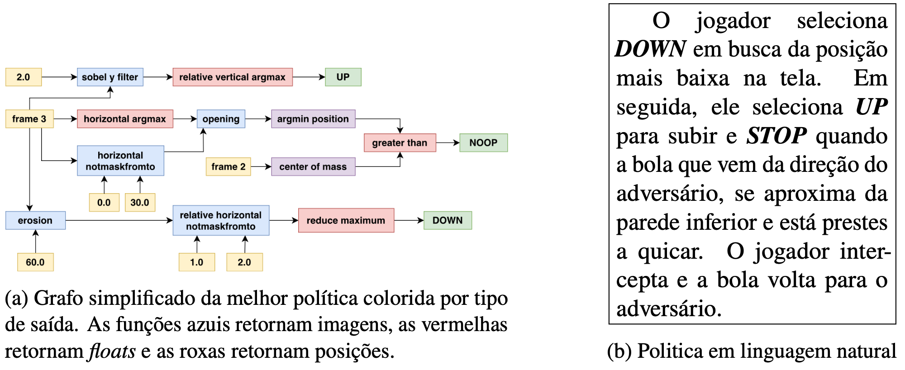
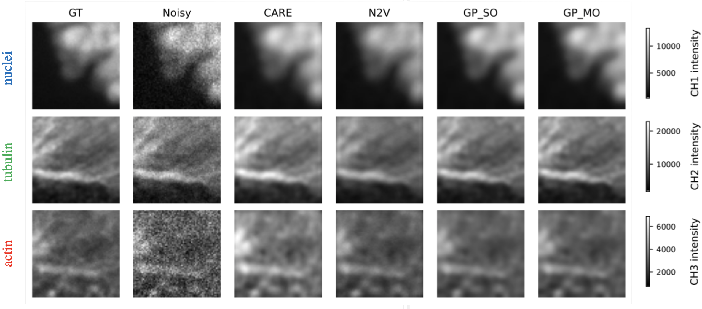
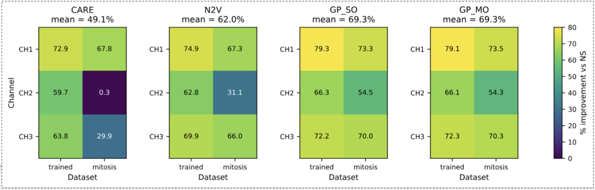
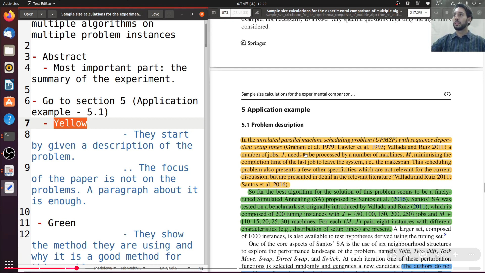
https://www.youtube.com/watch?v=XB9taj-RM-k
Oriento estudantes com foco em capacidade crítica, técnica e ética. Objetivo na UnB: integrar graduação, mestrado e doutorado em projetos de pesquisa internacional.
Unidades · Laboratórios · Plano de longo prazo
Colaboração ativa com Toulouse/França e Japão
Linha internacional de pesquisa em IA interpretável e computação evolutiva
pesquisa · formação · colaboração internacional · impacto social
UnB · Brasília
Prova Oral · Processo Seletivo UnB · 2026
Formação em Larga Escala, geração de pessoal capacitado, soberania tecnológica
Mais de uma década de formação internacional
Oportunidade para impactar e direcionar o curso
Participação efetiva
Velocidade vs. precisão; acurácia vs tamanho (GP)
Algoritmos multiobjetivo exploram esse espaço e devolvem um conjunto de soluções de compromisso — a frente de Pareto.
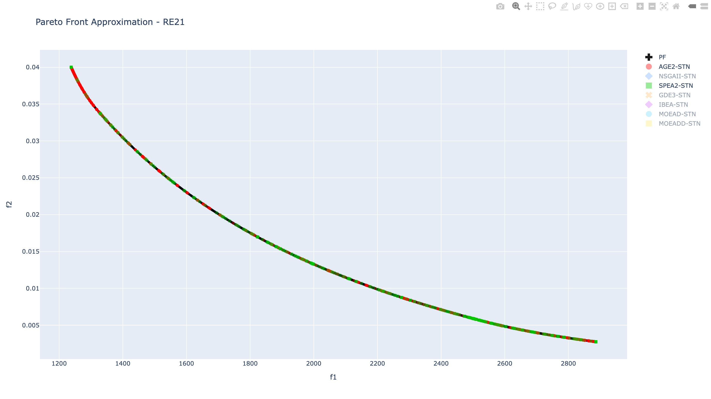
https://anonymous.4open.science/api/repo/STNResults-699F/file/RE21_pareto_front.htmlAntes de otimizar, convém entender o problema. Fitness landscapes medem a estrutura do espaço de busca: rugosidade, neutralidade — métricas que guiam a escolha do algoritmo certo para cada cenário.
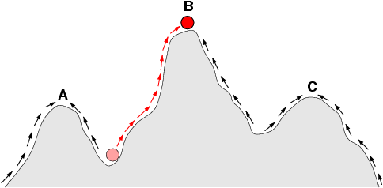
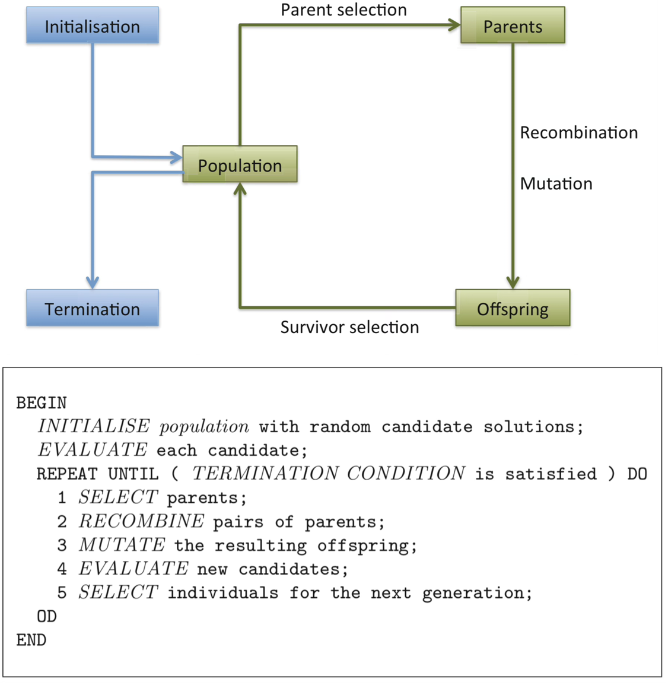
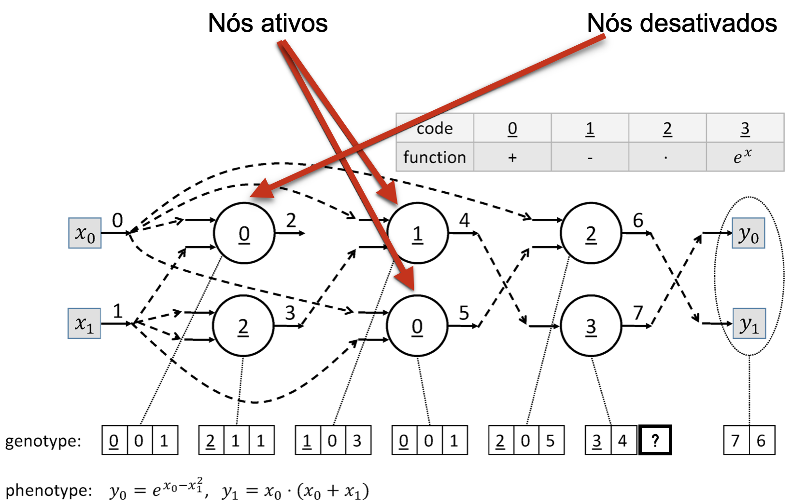
Python PyTorch TensorFlow Scikit-learn Pandas · NumPy Git / GitHub Jupyter · Colab
AWS · GCP · Azure Docker MLflow · W&B TensorBoard Aprender (AVA · UnB)